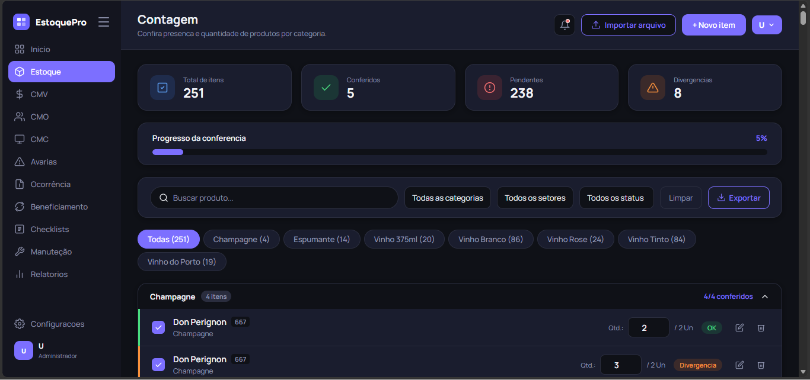
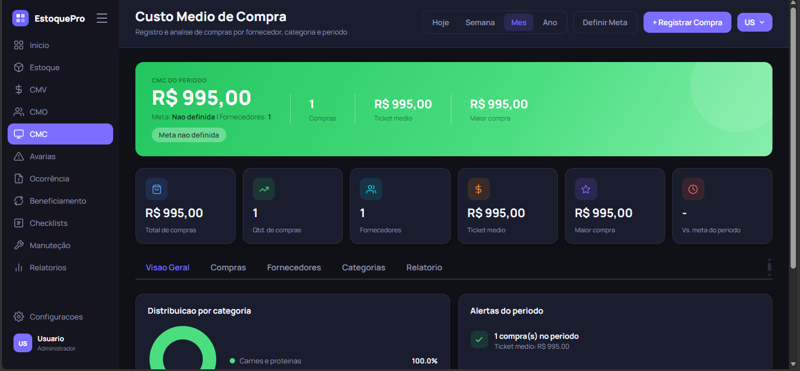
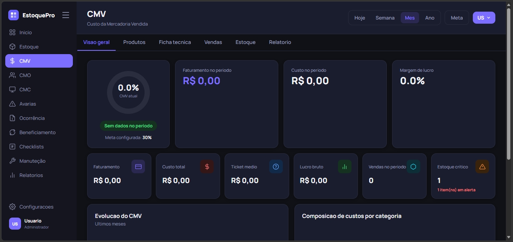

Controle sua operação.
Reduza perdas.
Decida melhor.
O GestãoPro reúne estoque, custos, equipe e processos operacionais em um único sistema modular — para sua empresa crescer com mais controle e menos retrabalho.
- Acesso pelo celular e computador
- Sistema modular
Sua operação ainda depende de planilhas e controles espalhados?
Falta de visibilidade
Informações espalhadas em planilhas e cadernos dificultam a tomada de decisão no dia a dia.
Perdas e desperdícios
Sem controle adequado, perdas de estoque e insumos podem passar despercebidas por meses.
Processos manuais
Tarefas repetitivas e digitação manual consomem tempo que a equipe poderia usar na operação.
Custos difíceis de acompanhar
Sem dados centralizados, fica mais difícil entender exatamente onde o dinheiro está sendo gasto.
O GestãoPro centraliza tudo em um único lugar.
Como funciona
Três passos para colocar sua operação sob controle.
-
01
Cadastre sua operação
Configure setores, produtos, usuários e processos de acordo com a realidade do seu negócio.
-
02
Acompanhe em tempo real
Monitore estoque, custos, ocorrências e tarefas conforme acontecem, direto do painel.
-
03
Tome decisões melhores
Use os dados da própria operação para reduzir perdas e melhorar resultados.
Tudo o que sua operação precisa. Em um único lugar.
Nove módulos integrados, organizados do jeito que sua equipe realmente trabalha.
Gestão
Dashboard Inicial
Visão geral com indicadores em tempo real, resumo diário e acesso rápido a todos os módulos.
Estoque
Contagem de itens, controle de quantidade mínima e importação de nota fiscal por foto ou PDF.
Custos
CMV
Ficha técnica por produto, cálculo automático do custo real e baixa automática de estoque.
CMO
Lançamento de salários, encargos e benefícios, com meta de percentual sobre o faturamento.
CMC
Controle de custos de insumos e fornecedores, com análise do histórico de compras.
Operação
Avarias & Ocorrências
Registro de perdas com múltiplos itens, valor perdido, setor responsável e motivos sugeridos.
Checklists
Listas de tarefas por setor, com execução e confirmação por foto obrigatória.
Beneficiamento
Controle de produção, perdas e aproveitamento de insumos, com confirmação fotográfica.
Manutenção
Requisição & Manutenção
Pedidos de material e chamados de manutenção com foto do problema e histórico completo.
Tenha uma visão completa da sua operação
Alterne entre as áreas do sistema e veja como o GestãoPro organiza cada parte da sua operação em um único painel.



Mais controle. Menos trabalho manual.
Leitura automática de notas fiscais
Envie uma foto ou PDF da nota fiscal e o sistema facilita o cadastro das informações, sem digitação manual.
Confirmação por foto
Tenha evidências visuais em processos críticos, como checklists e avarias.
Acesso em qualquer dispositivo
Use pelo celular, tablet ou computador, com a mesma experiência em qualquer lugar.
Dados atualizados
Informações sempre em dia, para apoiar decisões mais rápidas sobre a operação.
O que muda quando sua operação está sob controle?
Menos perdas
Ocorrências e avarias registradas e acompanhadas de perto.
Mais produtividade
Menos tempo em tarefas manuais e mais tempo na operação.
Mais controle de estoque
Quantidade, custo e movimentação sempre visíveis.
Decisões mais rápidas
Dados centralizados, sem esperar planilhas serem atualizadas.
Para quem é o GestãoPro
Uma plataforma modular para diferentes tipos de operações.
Planos simples e transparentes
Escolha o plano certo para o tamanho da sua operação.
* Valores de exemplo — a definir
Básico
Para pequenos negócios
- Dashboard principal
- Gestão de estoque
- Até 3 usuários
- Relatórios avançados
- Leitura automática de NF
Profissional
Para empresas em crescimento
- Todos os recursos do Básico
- CMV, CMO e CMC
- Até 10 usuários
- Relatórios avançados
- Leitura automática de NF
Empresarial
Para operações maiores
- Todos os módulos
- Usuários ilimitados
- Suporte prioritário
- Personalizações
- Treinamento incluído
Construído para operações que precisam de mais controle
Uma plataforma pensada para simplificar a gestão de estoque, custos e processos operacionais — do jeito que negócios reais funcionam.
Perguntas frequentes
Sim. O GestãoPro é modular e se adapta a diferentes operações — restaurantes, hotéis, mercados, oficinas, distribuidoras e cozinhas industriais, entre outros negócios que precisam controlar estoque, custos e operação.
Não é preciso instalar nada. O sistema funciona direto no navegador, com a mesma funcionalidade no celular, tablet ou computador.
Basta enviar uma foto ou o PDF da nota fiscal. O sistema lê os dados automaticamente e facilita o preenchimento do cadastro, reduzindo a digitação manual.
Sim. Os dados ficam armazenados de forma criptografada e com backup automático, com acesso restrito aos usuários da sua conta.
Você escolhe o plano mensal ou anual de acordo com o tamanho da sua operação, sem contrato de fidelidade, podendo cancelar quando quiser.
Sim. O suporte funciona de segunda a sexta, por chat, e-mail e WhatsApp.
Sua operação pode ser mais simples.
Comece a organizar sua gestão com o GestãoPro.